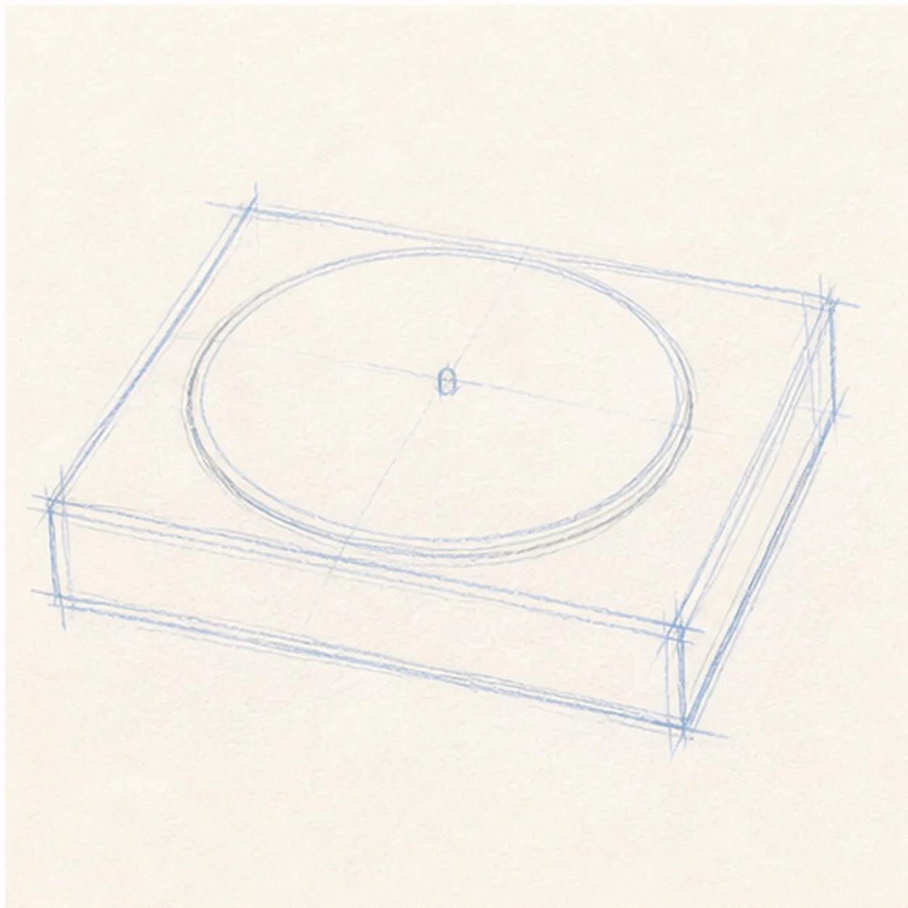
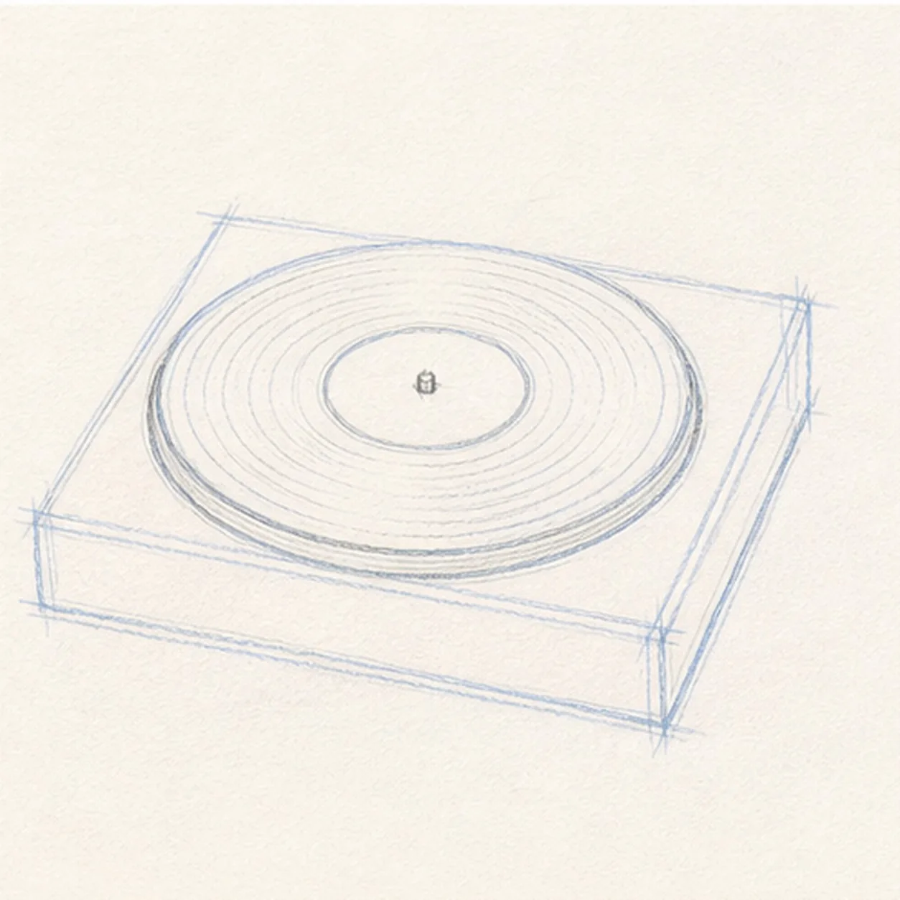
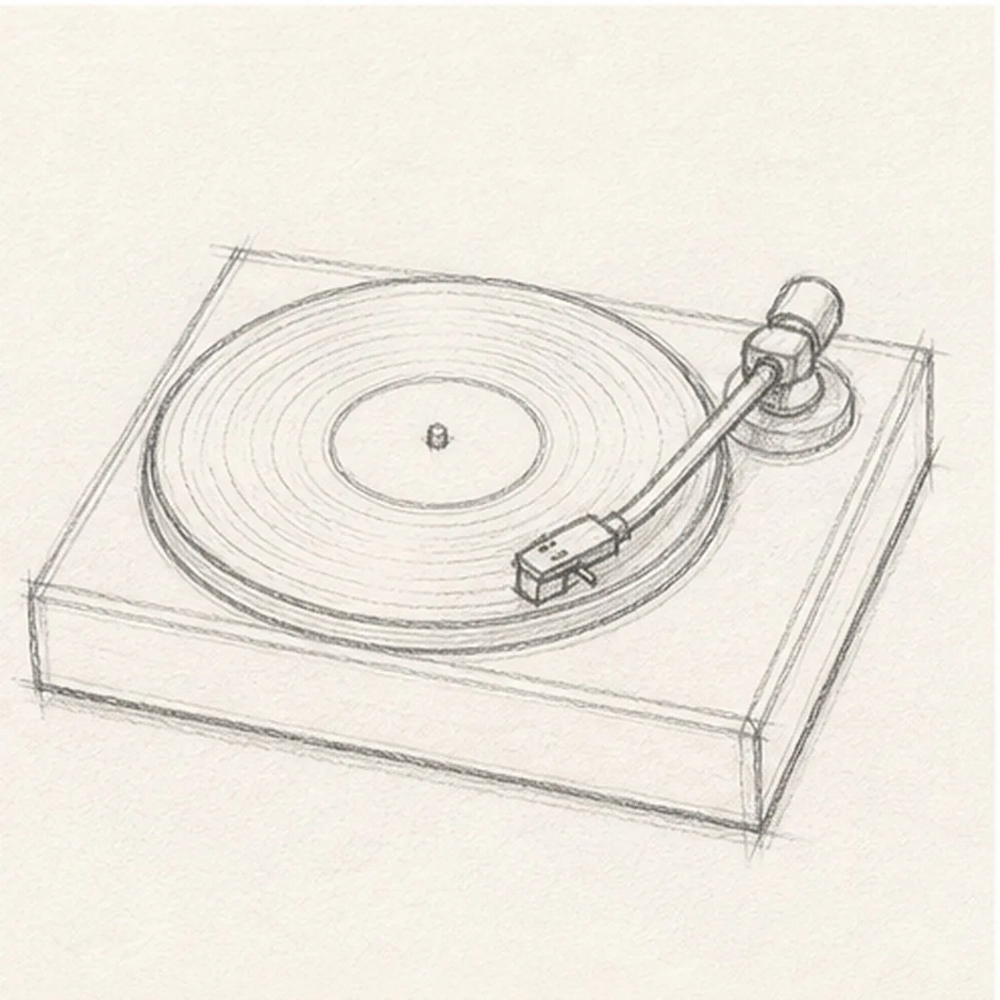
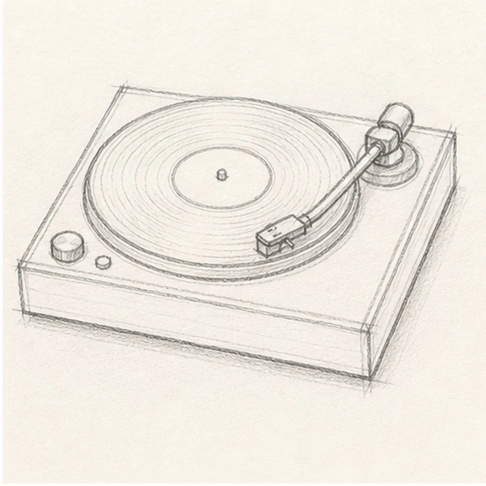
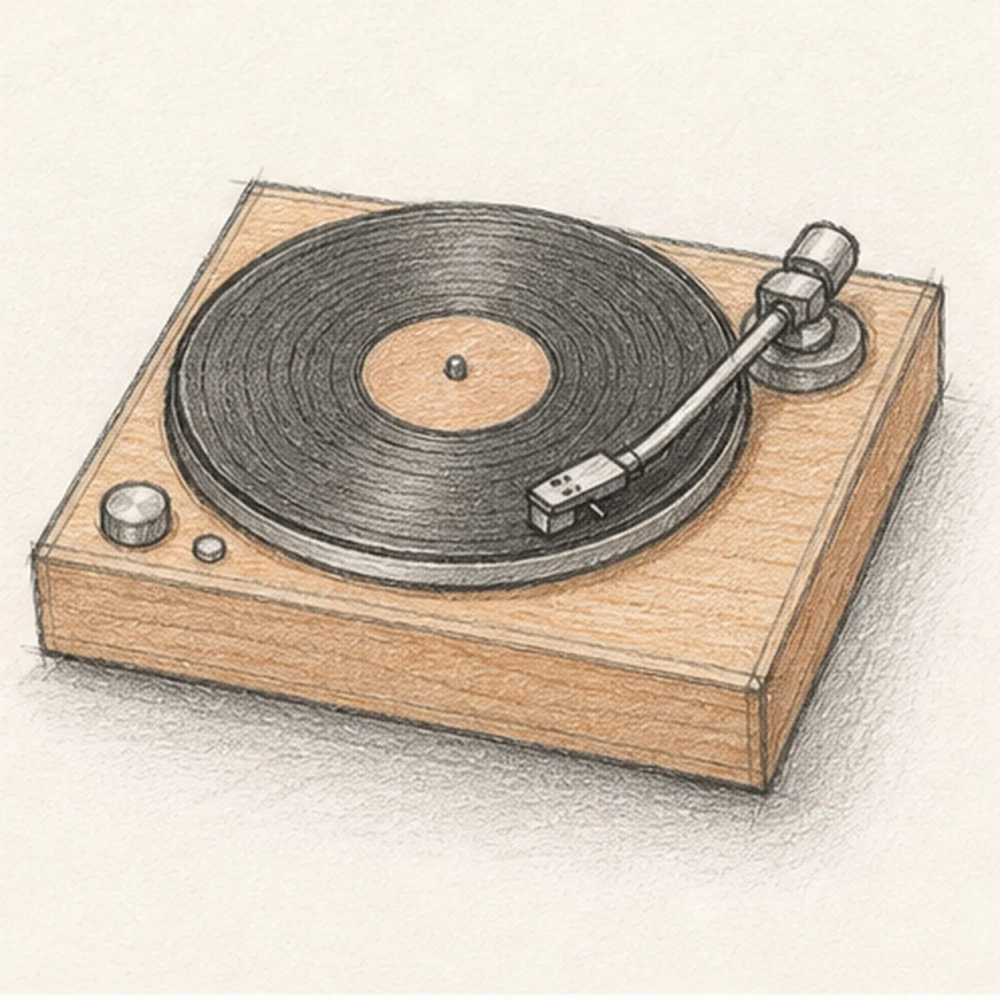

From the archive
Let's draw a record player with vinyl
Treat this as one small practice round: build the subject lightly, notice the shapes, then darken only the lines that help the finished sketch.
-
01

Place the base and record
Draw a shallow rectangular base in perspective, then add the large record circle or ellipse on top.
Sketch tip: Keep the record centered on the base. A small tilt is fine, but the disc should not slide off the player.
-
02

Center the label
Add the small center label and refine the record edge so it sits cleanly inside the base.
Sketch tip: Leave a calm circle in the middle. That empty label helps the darker vinyl grooves read later.
-
03

Angle the tonearm
Draw a slim angled tonearm from the back corner toward the record, then add the small needle head.
Sketch tip: Aim the needle toward the outer half of the record. That angle makes the player look ready to play.
-
04

Set the back hinge
Add the open lid and hinge along the back edge without changing the turntable's angle.
Sketch tip: Let the lid follow the same perspective as the base. Matching angles keep the sketch believable.
-
05

Add grooves and controls
Draw light circular grooves on the vinyl, add a couple of small controls, and shade under the record and arm.
Sketch tip: Use light pressure for the grooves. Too many dark rings can flatten the record.
-
06

Finish the record player sketch
Darken the keeper contours, clarify the grooves, needle head, hinge, and controls, and balance the existing graphite shadows.
Sketch tip: Stop before adding music notes, lettering, or extra records. The open lid, disc, and tonearm already tell the story.